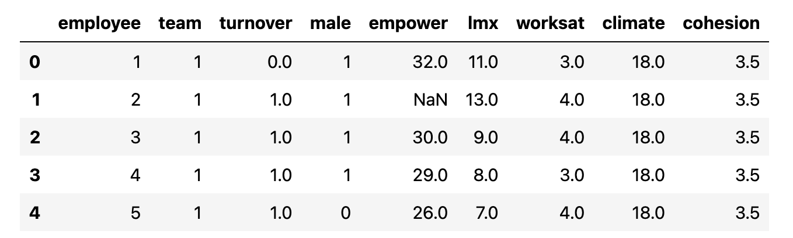
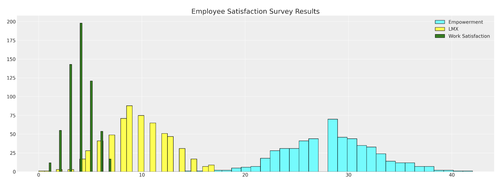
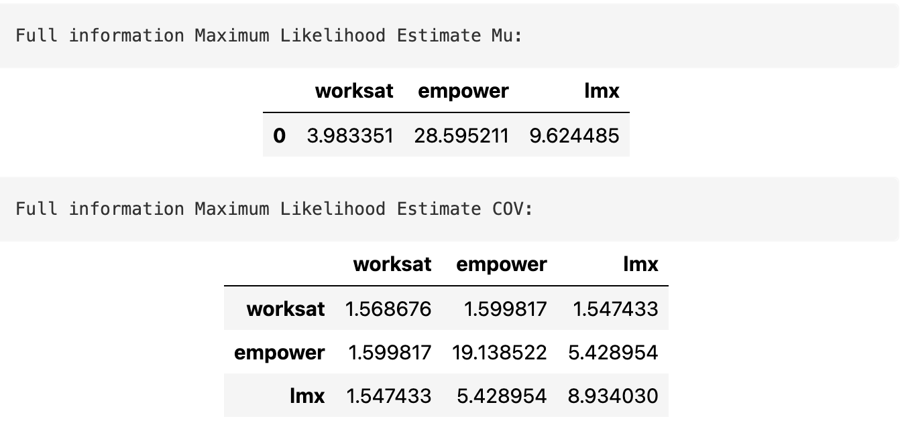
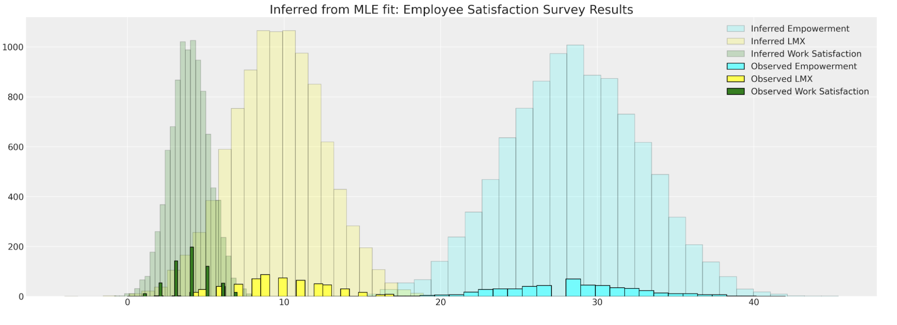
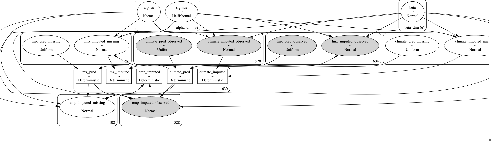
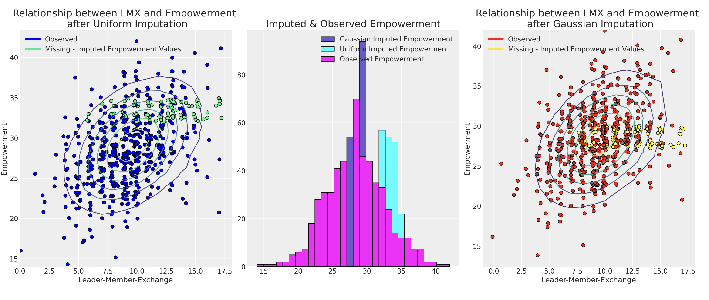
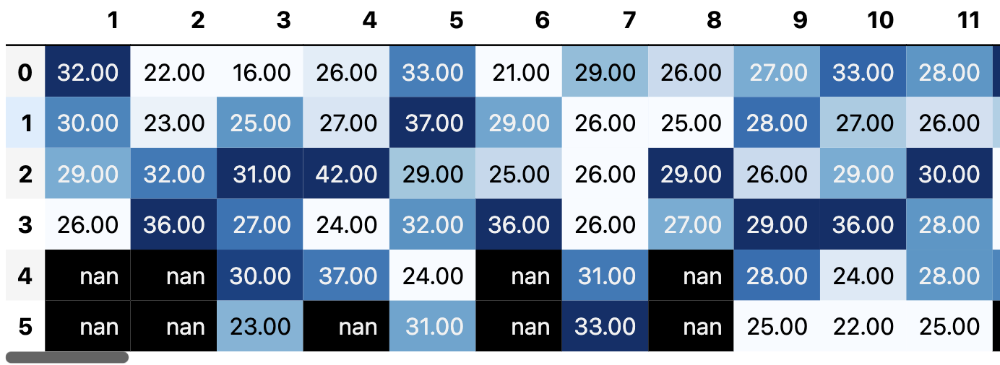
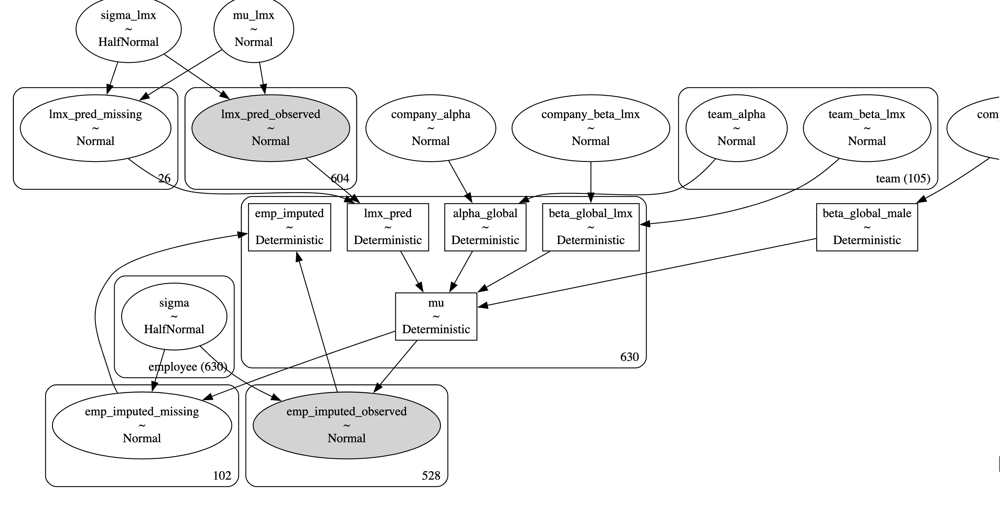
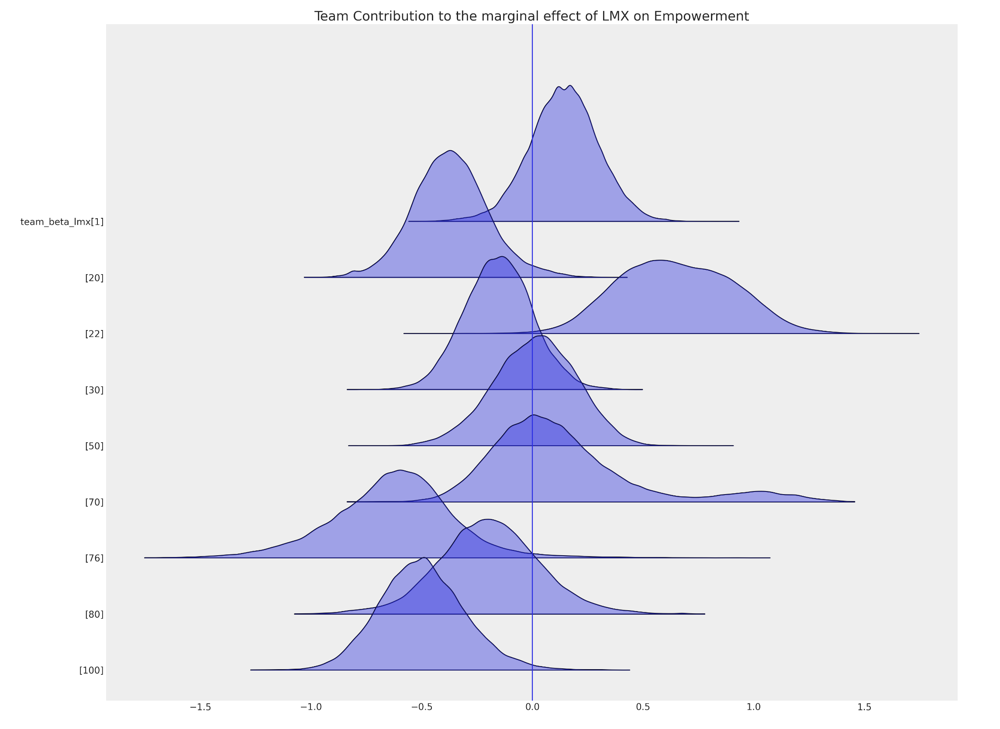

Missing Data and Bayesian Imputation with PyMC
Causal Narratives in Survey Analysis
Data Science @ Personio
and Open Source Contributor @ PyMC
4/23/24
Preliminaries
Background
- I’m a data scientist at Personio
- Contributor at PyMC and PyMC labs
- Bayesian statistician,
- Reformed philosopher and logician.
- Website: https://nathanielf.github.io/
Disclaimer
None of Personio’s data was used in this presentation
Code or it didn’t Happen
The worked examples used here can be found here
The Pitch
Causal inference techniques are required for Non-response in People Analytics survey data
Bayesian imputation methods are state of the art for theory-informed imputation of missing data. Missing data imputation is important.
Agenda
Agenda
- Typology of Missing-ness
- Multivariate imputation using FIML
- Bayesian Imputation by Chained Equations
- Hierarchical Structures impacting Missing-ness
- Imputation and Causal Narratives
- Conclusion
- Missing Data: a Gateway to Causal Inference
Typology of Missing-ness
- Missing Completely at Random (MCAR)
- \(P(M = 1 | Y_{obs}, Y_{miss}, \phi) = P(M=1 | \phi)\)
- where \(\phi\) is the haphazard circumstance of the world
- missing-ness cannot be predicted from the \(Y\) variable
- Missing at Random (MAR)
- \(P(M = 1 | Y_{obs}, Y_{miss}, \phi) = P(M=1 | Y_{obs}, \phi)\)
- missing-ness can be predicted from \(Y\) variable
- Missing Not at Random (MNAR)
- \(P(M = 1 | Y_{obs}, Y_{miss}, \phi)\)
- non-ignorable missing-ness. Need to account for why!
Identifiability under Missing-ness
- Under MCAR and MAR there exist consistent identifiable estimators for functions of \(Y\)
- Under MNAR there does not exist in general consistent estimators of \(Y.\)
We cannot use data to distinguish cases which are MNAR V (MCAR or MAR).
We are required to make assumptions about the nature of the missing-ness to try and account for it.
Multivariate Missing-ness
We can model the distribution governing our data to sample values where they are missing.
The Data
Employee Empowerment Survey
The Metrics
Metrics with Gaps
Modelling the Multivariate Structure
We can use a MLE variant called Full information maximum likelihood to estimate the multivariate distribution.
\[ \mathbf{Y} = MvNormal(\mu, \Sigma) \]
FIML controls for the missing observations in the data by maximising the likelihood based across the different patterns of missing-ness in the data.
Modelling the Multivariate Structure
FIML in code
data = df_employee[["worksat", "empower", "lmx"]]
def split_data_by_missing_pattern(data):
# We want to extract our the pattern of missing-ness in our dataset
# and save each sub-set of our data in a structure that can be used to feed into a log-likelihood function
grouped_patterns = []
patterns = data.notnull().drop_duplicates().values
# A pattern is whether the values in each column e.g. [True, True, True] or [True, True, False]
observed = data.notnull()
for p in range(len(patterns)):
temp = observed[
(observed["worksat"] == patterns[p][0])
& (observed["empower"] == patterns[p][1])
& (observed["lmx"] == patterns[p][2])
]
grouped_patterns.append([patterns[p], temp.index, data.iloc[temp.index].dropna(axis=1)])
return grouped_patterns
def reconstitute_params(params_vector, n_vars):
# Convenience numpy function to construct mirrored COV matrix
# From flattened params_vector
mus = params_vector[0:n_vars]
cov_flat = params_vector[n_vars:]
indices = np.tril_indices(n_vars)
cov = np.empty((n_vars, n_vars))
for i, j, c in zip(indices[0], indices[1], cov_flat):
cov[i, j] = c
cov[j, i] = c
cov = cov + 1e-25
return mus, cov
def optimise_ll(flat_params, n_vars, grouped_patterns):
mus, cov = reconstitute_params(flat_params, n_vars)
# Check if COV is positive definite
if (np.linalg.eigvalsh(cov) < 0).any():
return 1e100
objval = 0.0
for obs_pattern, _, obs_data in grouped_patterns:
# This is the key (tricky) step because we're selecting the variables which pattern
# the full information set within each pattern of "missing-ness"
# e.g. when the observed pattern is [True, True, False] we want the first two variables
# of the mus vector and we want only the covariance relations between the relevant variables from the cov
# in the iteration.
obs_mus = mus[obs_pattern]
obs_cov = cov[obs_pattern][:, obs_pattern]
ll = np.sum(multivariate_normal(obs_mus, obs_cov).logpdf(obs_data))
objval = ll + objval
return -objval
def estimate(data):
n_vars = data.shape[1]
# Initialise
mus0 = np.zeros(n_vars)
cov0 = np.eye(n_vars)
# Flatten params for optimiser
params0 = np.append(mus0, cov0[np.tril_indices(n_vars)])
# Process Data
grouped_patterns = split_data_by_missing_pattern(data)
# Run the Optimiser.
try:
result = scipy.optimize.minimize(
optimise_ll, params0, args=(n_vars, grouped_patterns), method="Powell"
)
except Exception as e:
raise e
mean, cov = reconstitute_params(result.x, n_vars)
return mean, cov
fiml_mus, fiml_cov = estimate(data)Estimated Model and Samples


The Estimated model Parameters are used to sample from the implied distribution.
But the approach lacks control and insight into why the data was missing in the first place.
Cannot directly account for MNAR cases.
Bayesian Imputation by Chained Equation
In which we directly sample probable values for each missing observation conditional on flexibly specifiable models.
Probabilistic Maps
Sampling the possible spaces over missing data
The idea
- When gaps in survey data are not random
- We need to understand the drivers of missing-ness
- The “topology” around the gaps gives us clues
- Bayesian inference helps to imputes the probable inclines and curves of the space in the gaps conditional on the observed data.
- In our employee engagement data the question becomes - What are the enviromental influences on the probable responses?
The Joint Distribution Decomposed
Modelling the Outcome piece-wise
Start with the observation that: \[f(emp, lmx, climate, male) \\ = f(emp | lmx, climate, male) \cdot \\f(lmx | climate, male) \cdot f(climate | male) \cdot f(male)^{*}\]
which can be phrased as a set of linear models
\[ empower = \alpha_{2} + \beta_{3}male + \beta_{4}climate + \beta_{5}lmx \\ lmx = \alpha_{1} + \beta_{1}climate + \beta_{2}male \\ climate = \alpha_{0} + \beta_{0}male \]
Bayesian Updating and Calibration
Estimating the Model
To evaluate the integrals in the Bayesian model we use MCMC to estimate conditional probabilities of the joint distribution.
\[\underbrace{\color{blue}{\beta}}_{\text{prior draws}} \sim Normal(0, 1) \]
\[ \underbrace{p(\color{blue}{\beta} | D)}_{\text{posterior draws}} = \frac{p(\mathbb{\color{blue}{\beta}})p(D | \color{blue}{\beta} )}{\int_{i}^{n} p(D | \mathbf{\color{blue}{\beta_{i}}})p(\mathbf{\color{blue}{\beta_{i}}}) } \]
Priors can be used flexibly to regularise and improve reliability of estimation across structural causal models.
The Model
Sensitivity Analysis with Priors in PyMC
data = df_employee[["lmx", "empower", "climate", "male"]]
lmx_mean = data["lmx"].mean()
lmx_min = data["lmx"].min()
lmx_max = data["lmx"].max()
lmx_sd = data["lmx"].std()
cli_mean = data["climate"].mean()
cli_min = data["climate"].min()
cli_max = data["climate"].max()
cli_sd = data["climate"].std()
priors = {
"climate": {"normal": [lmx_mean, lmx_sd, lmx_sd],
"uniform": [lmx_min, lmx_max]},
"lmx": {"normal": [cli_mean, cli_sd, cli_sd],
"uniform": [cli_min, cli_max]},
}
def make_model(priors, normal_pred_assumption=True):
coords = {
"alpha_dim": ["lmx_imputed", "climate_imputed", "empower_imputed"],
"beta_dim": [
"lmxB_male",
"lmxB_climate",
"climateB_male",
"empB_male",
"empB_climate",
"empB_lmx",
],
}
with pm.Model(coords=coords) as model:
# Priors
beta = pm.Normal("beta", 0, 1, size=6, dims="beta_dim")
alpha = pm.Normal("alphas", 10, 5, size=3, dims="alpha_dim")
sigma = pm.HalfNormal("sigmas", 5, size=3, dims="alpha_dim")
if normal_pred_assumption:
mu_climate = pm.Normal(
"mu_climate", priors["climate"]["normal"][0], priors["climate"]["normal"][1]
)
sigma_climate = pm.HalfNormal("sigma_climate", priors["climate"]["normal"][2])
climate_pred = pm.Normal(
"climate_pred", mu_climate, sigma_climate, observed=data["climate"].values
)
else:
climate_pred = pm.Uniform("climate_pred", 0, 40, observed=data["climate"].values)
if normal_pred_assumption:
mu_lmx = pm.Normal("mu_lmx", priors["lmx"]["normal"][0], priors["lmx"]["normal"][1])
sigma_lmx = pm.HalfNormal("sigma_lmx", priors["lmx"]["normal"][2])
lmx_pred = pm.Normal("lmx_pred", mu_lmx, sigma_lmx, observed=data["lmx"].values)
else:
lmx_pred = pm.Uniform("lmx_pred", 0, 40, observed=data["lmx"].values)
# Likelihood(s)
lmx_imputed = pm.Normal(
"lmx_imputed",
alpha[0] + beta[0] * data["male"] + beta[1] * climate_pred,
sigma[0],
observed=data["lmx"].values,
)
climate_imputed = pm.Normal(
"climate_imputed",
alpha[1] + beta[2] * data["male"],
sigma[1],
observed=data["climate"].values,
)
empower_imputed = pm.Normal(
"emp_imputed",
alpha[2] + beta[3] * data["male"] + beta[4] * climate_pred + beta[5] * lmx_pred,
sigma[2],
observed=data["empower"].values,
)
idata = pm.sample_prior_predictive()
idata.extend(pm.sample(random_seed=120))
pm.sample_posterior_predictive(idata, extend_inferencedata=True)
return idata, model
idata_uniform, model_uniform = make_model(priors, normal_pred_assumption=False)
idata_normal, model_normal = make_model(priors, normal_pred_assumption=True)
The Model Structure
The PyMC model Graph
Chained Equation Model
Imputing the values and feeding them forward into the ultimate likelihood terms to estimate the profile of the joint distribution.
Sensitivty to Prior Specification
The Effect of choosing the right Priors
Model choice using predictive adequacy as a constraint. Bayesian model adequacy workflow applies here too
Hierarchcial Structures impacting Missing-ness
In which we consider how management structure and team membership can induce different patterns of imputation.
Hierarchical Structures of Non-response
Team dynamics determine probability of response
Team Empowerment Scores
We can try to recover ignorable missing-ness i.e moving to MAR from MNAR conditional on group specific random effects.
Hierarchies and Human Relations
Power Structures Interactions
Hierarchies in Code
Specifying the hierarchical model in PyMC
team_idx, teams = pd.factorize(df_employee["team"], sort=True)
employee_idx, _ = pd.factorize(df_employee["employee"], sort=True)
coords = {"team": teams, "employee": np.arange(len(df_employee))}
with pm.Model(coords=coords) as hierarchical_model:
# Priors
company_beta_lmx = pm.Normal("company_beta_lmx", 0, 1)
company_beta_male = pm.Normal("company_beta_male", 0, 1)
company_alpha = pm.Normal("company_alpha", 20, 2)
team_alpha = pm.Normal("team_alpha", 0, 1, dims="team")
team_beta_lmx = pm.Normal("team_beta_lmx", 0, 1, dims="team")
sigma = pm.HalfNormal("sigma", 4, dims="employee")
# Imputed Predictors
mu_lmx = pm.Normal("mu_lmx", 10, 5)
sigma_lmx = pm.HalfNormal("sigma_lmx", 5)
lmx_pred = pm.Normal("lmx_pred", mu_lmx, sigma_lmx, observed=df_employee["lmx"].values)
# Combining Levels
alpha_global = pm.Deterministic("alpha_global", company_alpha + team_alpha[team_idx])
beta_global_lmx = pm.Deterministic(
"beta_global_lmx", company_beta_lmx + team_beta_lmx[team_idx]
)
beta_global_male = pm.Deterministic("beta_global_male", company_beta_male)
# Likelihood
mu = pm.Deterministic(
"mu",
alpha_global + beta_global_lmx * lmx_pred + beta_global_male * df_employee["male"].values,
)
empower_imputed = pm.Normal(
"emp_imputed",
mu,
sigma,
observed=df_employee["empower"].values,
)
idata_hierarchical = pm.sample_prior_predictive()
idata_hierarchical.extend(
sample_blackjax_nuts(draws=20_000, random_seed=500, target_accept=0.99)
)
pm.sample_posterior_predictive(idata_hierarchical, extend_inferencedata=True)Model Structure
Hierarchical Team based Model
Influence of Team Membership
Modification of Leader Impact based on Team imputed with Uncertainty
Imputation with Team Effects

Imputation patterns under team influence
Imputation and Causal Narratives
In which we digress on the importance for imputation in causal inference more generally.
Industry Questions are Causal
On the Importance of Theory Construction
| ID | \(Y_{i}(0)\) | \(Y_{i}(1)\) |
|---|---|---|
| 1 | ? | 1 |
| 2 | 1 | ? |
| 3 | ? | 0 |
| 4 | ? | 1 |
| 5 | 0 | ? |
The Fundamental problem of Causal Inference as Missing Data
- The heart of causal inference is understanding the risk of confounding influence.
- Naively optimising for some in-sample predictive benchmark does not protect your model from confounding bias.
- Causal models with deliberate and careful construction of the dependence mechanism are your best hope for genuine insight and robust predictive performance
- This is crucial for model explainability in the human-centric domains, where the decisions need to be justifiable.
- Used to answer Counterfactuals
- How do patterns of Employee empowerment change if we can intervene on their relationship with their manager?
Recap and Conclusion
We’ve seen the application of missing data analysis to survey data in the context of People Analytics.
Multivariate approaches are effective but cannot help address confounding bias,
The flexibility of the Bayesian approach can be tailored to the appropriate complexity of our theory about why our data is missing.
Hierarchical structures pervade business - conduits for leadership influence/communication channels. Hierarchical modelling can isolate estimates of this impact and control for biases of naive aggregates.
- Reveal inefficiencies and mismatches between team and management.
Imputation gives “voice” to the missing. Inverse Propensity weighting corrects mis-representative samples. Both are correctives for selection effect bias.
Missing Data with PyMC